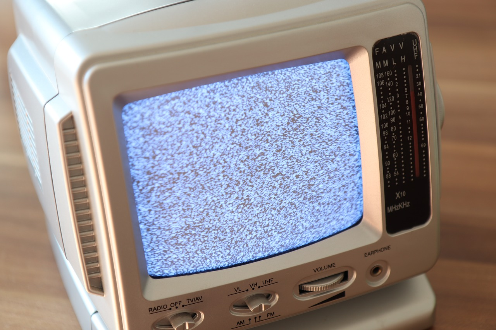

Dissertation Project: Creating An RNG With A CRT TV's Static

This project was awarded a First after being subbmited as my dissertation piece at Birmingham City University.
The idea was initialy inspired by the random number generator owned by cloud flare, lava RNG also known as the wall of lava lamps.
The aim was to create a source of entropy using the static displayed by a CRT TV, created by background radiation or atmospheric noise, which by nature is chaotic or truly random.
The theory was that because, atmospheric noise is picked up by TV antennas, its pattern of static generated through the random signals and background noise, can be used to source a random number generator.
While the project has many features it must be addmited that further work on the code would need to be done to run this at scale. Esecially this was created as a proof of concept.
Features
- Generate bits from any image
- Track statistics of generation
- Create custom graphs with data generated
- Generate any number of bits at any interval
- Store any data generated for later review
What the project taught me
- How to better manage large sections of code
- The ability to work under pressure
- Working with time constraints
- An appriciation for Matplotlib